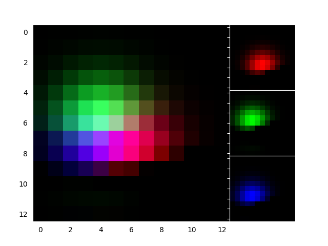
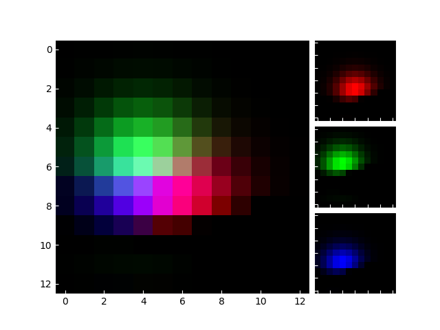

Note
Click here to download the full example code
Demo Axes RGB¶
RGBAxes to show RGB composite images.
- 
- 
import numpy as np
from matplotlib import cbook
import matplotlib.pyplot as plt
from mpl_toolkits.axes_grid1.axes_rgb import make_rgb_axes, RGBAxes
def get_rgb():
Z = cbook.get_sample_data("axes_grid/bivariate_normal.npy", np_load=True)
Z[Z < 0] = 0.
Z = Z / Z.max()
R = Z[:13, :13]
G = Z[2:, 2:]
B = Z[:13, 2:]
return R, G, B
def make_cube(r, g, b):
ny, nx = r.shape
R = np.zeros((ny, nx, 3))
R[:, :, 0] = r
G = np.zeros_like(R)
G[:, :, 1] = g
B = np.zeros_like(R)
B[:, :, 2] = b
RGB = R + G + B
return R, G, B, RGB
def demo_rgb1():
fig = plt.figure()
ax = RGBAxes(fig, [0.1, 0.1, 0.8, 0.8], pad=0.0)
r, g, b = get_rgb()
ax.imshow_rgb(r, g, b)
def demo_rgb2():
fig, ax = plt.subplots()
ax_r, ax_g, ax_b = make_rgb_axes(ax, pad=0.02)
r, g, b = get_rgb()
im_r, im_g, im_b, im_rgb = make_cube(r, g, b)
ax.imshow(im_rgb)
ax_r.imshow(im_r)
ax_g.imshow(im_g)
ax_b.imshow(im_b)
for ax in fig.axes:
ax.tick_params(axis='both', direction='in')
for sp1 in ax.spines.values():
sp1.set_color("w")
for tick in ax.xaxis.get_major_ticks() + ax.yaxis.get_major_ticks():
tick.tick1line.set_markeredgecolor("w")
tick.tick2line.set_markeredgecolor("w")
demo_rgb1()
demo_rgb2()
plt.show()
Keywords: matplotlib code example, codex, python plot, pyplot Gallery generated by Sphinx-Gallery